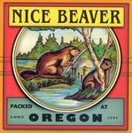

| Artist: | Nice Beaver |
| Title: | Oregon |
| Label: | Cyclops CYCL 145 |
| Length(s): | 67 minutes |
| Year(s) of release: | 2004 |
| Month of review: | [02/2005] |
| 1) | Nights In Armour | 12.12 |
| 2) | Morphine | 5.31 |
| 3) | Any Other Day | 5.52 |
| 4) | Oregon | 9.35 |
| 5) | The Beaver State | 6.42 |
| 6) | Two Brides For Two Brothers | 10.38 |
| 7) | Love On Arrival | 5.48 |
| 8) | Lawn Mower's Day Off | 10.14 |
The intro of Morphine slowly builds up. This track, even more than its predecessor, shows the changes of tempo Nice Beaver can make, switching from a flowing verse to a certain halting chorus, taken over by flooding guitars to return to the verse. Maybe this is how the band makes a five and half minute song sound pretty short.
Any Other Day takes more of a vocal approach, having just a short intro, with a more or less constant flow from verse to chorus. As the track progresses the central guitar theme pushing more to the fore, facilitated by the return of the chorus.
Title track Oregon has an intro of intermediate length, alternating lighter and more grave guitar sounds. From this we move into a gentle vocal section leading into a more engaged instrumental bit.
The Beaver State starts with a lot of seventies Santana guitar with a lingering feel, at times opposed by bass. As the track progresses the guitar sounds become a bit sharper, letting the memories of Santana abate. After this instrumental Two Brides immediately starts the once again laidback vocals, sounding more gentle, almost wavering now. After a couple of minutes the vocals are broken by an instrumental section with a news section read across. The guitar slow builds during the ensueing vocal section, once again instigating an instrumental section helping build towards the final vocal section and climax.
Love On Arrival is based on a hard guitar riff with strong type of a vocals. This track has a more traditional structure.
As Lawn Mower's Day Off starts you can already here the theme humming in the back, waiting to gain in strength and dominate the track, the way Nice Beaver knows so well how to do. This theme gets some room in the chorusses already, lingering in the back during verses. The instrumental break fully creates room for the theme and its variations on for instance keys and acoustic guitar.
This second Nice Beaver album is more consistent then its predecessor. Even though best track Lawn Mower's Day Off is not good enough to be another Wintersong, this album has turned out a step up for the band.